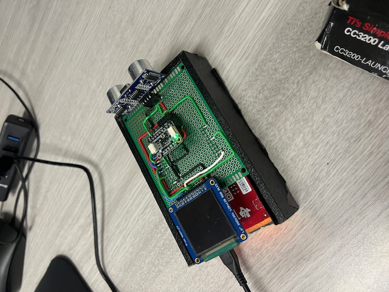
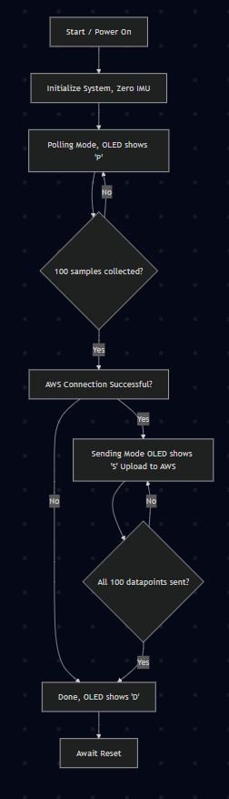
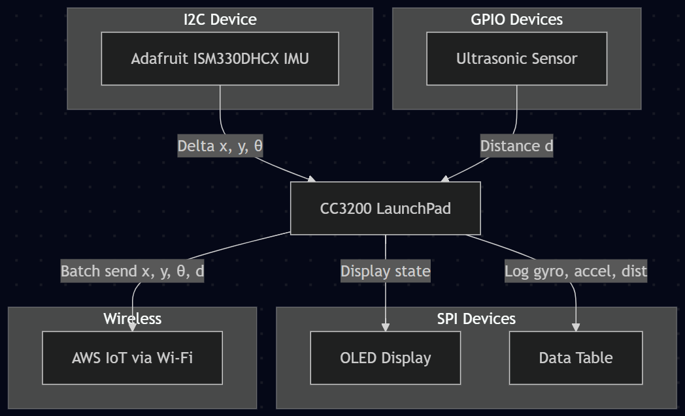
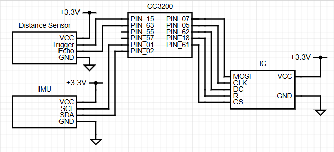
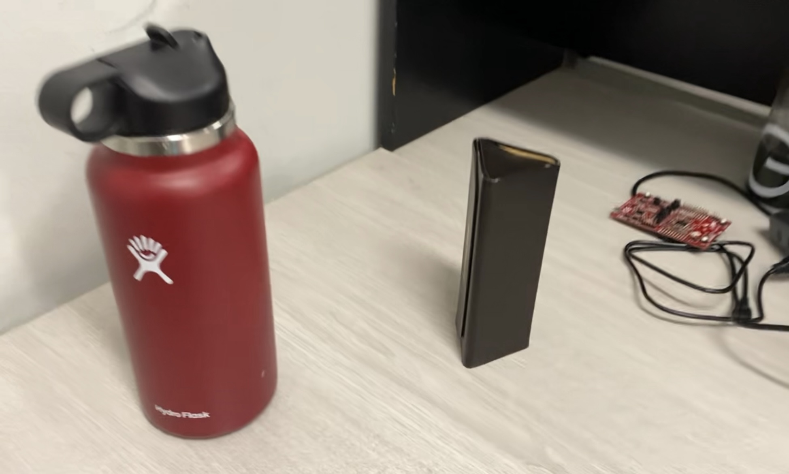

EEC172 Final Project: 2D Ultrasonic Sonar Scanner
Authors: Braedon Hansen, Haaris Tahir-Kheli
View Final Report (PDF)Description
For the final project, we chose to build a 2-dimensional sonar scanner for mapping areas of a room or house. We chose to do this because all currently available products of the same nature are very expensive and not accessible to most consumers. It contains an ultrasonic distance sensor and 6-axis inertial measurement unit (IMU) for mapping surroundings, and a organic light emitting diode (OLED) display for showing the state of the device, powered by a Texas Instruments CC3200 LaunchPad development board. The data was sent to Amazon Web Services (AWS) for storage, where it could be downloaded for processing and visualization.
Design
- 2 Hardware Communication Protocols: I²C for the IMU, SPI for the OLED.
- Web Service: AWS IoT, Lambda, S3 Bucket.
- 2 Sensing Devices: IMU, Ultrasonic Distance Sensor
Functional Specification
The high-level functionality of the device begins with booting. During booting, an initial reading of the IMU is taken and used as a calibration value for the remainder of the loop. The OLED is initialized as well, loading to a blank screen.
Once booting is complete, the device goes into its Polling state, showing a `P' on the OLED, collecting a data
point from the IMU and distance sensor, and looping until it collects 100 samples. Then, it attempts to connects to AWS,
skipping to the Done state if there is a failure. If AWS connects successfully, an `S' is displayed and each point is
sent to an AWS IoT Device Shadow, which triggers a Lambda function that appends a .CSV file in an S3 Bucket.
Finally, after all data has been sent, it enters a Done state, which waits for reset while displaying a `D' on the OLED.
System Architecture
| Pin | Peripheral Function | Description |
|---|---|---|
| PIN_15 | GPIO Output | Trigger Pulse (Ultrasonic) |
| PIN_63 | GPIO Input | Echo Input (Ultrasonic) |
| PIN_55 | UART0 TX | UART0 Transmit (USB-Serial) |
| PIN_57 | UART0 RX | UART0 Receive (USB-Serial) |
| PIN_01 | I²C SCL | I²C Clock line for IMU |
| PIN_02 | I²C SDA | I²C Data line for IMU |
| PIN_07 | SPI MOSI | OLED SPI Data (MOSI) |
| PIN_05 | SPI CLK | OLED SPI Clock (SCLK) |
| PIN_62 | GPIO Output | OLED DC (Data/Command) |
| PIN_18 | GPIO Output | OLED Reset (R) |
| PIN_61 | GPIO Output | OLED Chip Select (CS) |
As shown in the above table, the device uses 11 GPIO pins on the CC3200 LaunchPad.
The ultrasonic distance sensor uses pins 15 & 63 for Trigger and Echo,
respectively. The UART for debugging uses the standard 55 & 57. The IMU uses two pins for I²C,
with 1 and 2 as Clock and Data, respectively. Finally the OLED uses 5 pins for SPI,
using 7 for Master Out Slave In, 5 for Clock, 62 for Data/Command, 18 for Reset,
and 61 for Chip Select.
Implementation
Hardware
Sensors
- Distance Sensor
- IMU
The Trigger pin on the distance sensor is configured using an interrupt handler on a peripheral clock.
This is run every 0.05 seconds, setting a frequency of 20Hz. When this is triggered, it pulls the Echo pin high.
The signal remains high until an echo is received, at which point, the signal is dropped. Another peripheral
clock is used to time that difference, with an interrupt set to trigger at both edges. In this interrupt, the
falling edge is used to trigger a reading. The distance is derived using the speed of sound and the time of
travel. Then an IMU value is read and both data points are saved together.
At a high level, one timer sets a trigger speed, and the reciept of the return signal triggers the function to save the data from both sensors.
Actuators
- OLED Display
The OLED shows device state: 'P' for polling, 'S' for sending, 'D' for done.
Software
- Code Composer Studio (CCS) C code
- AWS
- Python
- MATLAB
The software system starts at the CC3200, where all the data is recorded, according to the hardware explanation above. Once the full data length is recorded, in a C struct string, each data point is parsed into a JSON message which is then sent to an AWS IoT Core Device Shadow. Though it only remains in the shadow for a moment before it is replaced, a Lambda function is triggered at each update. This function first clears an S3 bucket for the new batch of data then adds creates a .CSV and adds the new data to the bottom of the file.
Once all 100 data points have occupied the .CSV, the data can be downloaded from S3 via a Python program that accesses the bucket directly. Then, a MATLAB program extracts the data from the .CSV before filtering, transforming, and plotting the data.
Challenges
The largest challenge we faced in the development of this project was parasitic noise from the IMU. Because the sensor is naturally slightly noisy, like any sensor, the signal is not a perfect representation of the real world. While this is generally not an issue for orientation estimation, it becomes a significant issue when converting to position data.
To calculate position, the acceleration data must be integrated twice and added to all previous values. This double integration causes the noise to be squared as well, and the summing operation compounds the noise further. This compounding noise makes it increasingly difficult to maintain an accurate position estimate after more than a few seconds.
To counteract this, a number of filtering methods were applied to the data. First, all values under 0.02g in linear acceleration were ignored. This was intended to be a very simple high-pass filter, which erased any noise while the device was stationary, while allowing for larger (human) movements to make it through. This error is compounded exponentially when deriving position from an accelerometer, due to the double integration calculation. Next, a feature to allow the data to be visualized without the (X,Y) data was implemented, so the data could be visualized strictly with the more accurate gyroscope measurements. This was helpful for measurements where the device was not moved as much, and most of the movement was rotational.
The more advanced filtering is able to take a rough scan and turn it into a much smoother, organized image. Shown below is a water bottle and glasses case which are scanned. The original scan is messy and noisy. The last image shows the final, filtered version.
Objects

Unfiltered

Filtered
Future Work
This project has plenty of room to grow. A 9 DoF IMU with higher precision would allow better measurements and more accurate filtering. This would permit much longer readings, potentially long enough for a whole room or a small 3-D scan. Building the device a better case which could hold the battery inside, rather than using a large external battery would also be a good improvement. The user interface could be improved on the device side by implementing a simpler reset protocol, allowing for multiple scans without downloading the data and resetting the device. Finally, if data length was improved, the device could include a MicroSD card to store larger datasets while polling, dramatically expanding the practical applications of the device.
Bill of Materials
| Component | Price | Notes |
|---|---|---|
| HC-SR04 Ultrasonic Sensor | $3.95 | Already owned |
| Adafruit ISM330DHCX - 6 DoF IMU | $19.95 | Purchased |
| Solid-Core Wire Spool - 25ft - 22AWG | $2.95 | Already owned |
| Adafruit Perma-Proto PCB - Single | $4.50 | Already owned |
| Total (purchased) | $19.95 |